Android 프로덕션(Google Play v7) · 2026-11-12 ~ 2026-11-13 · 실제 사용자 피드백 → Claude Code·Codex 재현 → 수정 → 재확인
출시 직후 실제 사용자에게서 받은 피드백을 Claude Code와 Codex에게 운영 환경에서 재현하게 해, 실제 문제가 무엇인지 찾았습니다. 이틀 동안 재현·확인을 9차례 돌렸고, 그때마다 원인을 찾아 고친 뒤 서버 배포와 앱 OTA로 내보냈습니다. 5차 확인에서 체크리스트 전 항목이 통과했고, 6·7차에서 나온 표시·버튼 문제까지 고쳐 내보낸 뒤 8차 확인에서 실패 없이 통과했습니다. 같은 기간에 난 서비스 중단 2건(9시간, 23분)도 함께 적었습니다. 화면 캡처는 Claude Code와 Codex가 재현하며 찍은 1,053장 중 24장을 골라 넣었습니다.
9회재현·확인
6회백엔드 PR 머지
6회수정 배포
8회앱 OTA
0원추가 API 비용
1. 환경과 대응 방식
항목
내용
서비스
여행 영상 링크(인스타·유튜브)에서 장소를 뽑아 지도와 일정 초안으로 정리하는 앱
앱
Android, Google Play 프로덕션 v7(대한민국), 2026-11-12 공개. JS 변경은 EAS OTA(production 채널)로 전달
서버
Spring Boot 단일 서버(Oracle Cloud, systemd), Postgres, Kafka 대기열, Gemini 무료 티어
피드백
출시 뒤 실제 사용자에게서 받은 피드백에서 시작
재현·확인
Claude Code, Codex. 같은 테스트 계정으로 운영 빌드를 에뮬레이터에서 직접 써 보고 항목별 통과·실패와 재현 방법을 보고. 서로의 결과는 알려 주지 않음
한 회차의 흐름
피드백 재현: 받은 피드백을 Claude Code와 Codex가 운영 빌드에서 재현하고, 항목별 결과·재현 방법·캡처 파일명을 보고합니다. 이 문서의 "신고"는 이 재현 보고를 가리킵니다.
원인 조사: 코드, 운영 DB(읽기 전용 조회만), 운영 서버 로그로 확인합니다. 추정과 확인한 것을 구분해 적습니다.
대응안 선택: 원인과 해결안 2~4개를 보고하고, 정책이 걸린 것은 운영자가 고릅니다.
수정·검증: 테스트를 더하고 전체 빌드를 통과시킨 뒤 PR로 올립니다.
배포: 진행 중인 작업이 0건인지 확인하고, JAR 해시 비교 → 백업 → 교체 → 재시작 → UP 확인 → 배포 후 확인 3건 순으로 진행합니다. 앱은 OTA로 올립니다.
재확인: Claude Code와 Codex에게 새 빌드 번호와 확인 목록을 주고 같은 문제를 다시 보게 합니다.
2. 회차별 요약
회차
앱 빌드
재현·확인 결과
조치
운영 반영
최초 신고
v7 a9948112
사용성 문제 다수(P0 8건 포함)
백엔드 #415 앱 #131
서버 372600f 11-12 17:47 OTA 01a1cef1
1차 확인
01a1cef1
13개 중 통과 6, 부분 통과 3, 실패 3, 확인 못 함 1
백엔드 #417 앱 #133
서버 10f2a3f 11-12 21:45 OTA 01a1cfcb
2차 확인
01a1cfcb
9개 중 통과 3, 실패 2, 확인 못 함 4
백엔드 #419 앱 #135
서버 b6adfe9 11-12 23:29 OTA 01a1d02a
3차 확인
01a1d02a
통과 2, 부분 통과 2, 실패 2
앱 #137
OTA 01a1d06f
4차 확인
01a1d06f
통과 6, 실패 2
백엔드 #425 앱 #139
서버 3f0ec2f 11-13 12:45 OTA 01a1d302
5차 확인
01a1d302
전 항목 통과, 표시 문제 2건 추가 발견
백엔드 #427 앱 #141
서버 5d559f5 11-13 14:38 OTA 01a1d36a
6차 확인
01a1d36a
통과 5, 부분 통과 1, 실패 2, 확인 못 함 1. 확인 시간이 서버 재시작·중단과 겹침(5장)
앱 #143
OTA 01a1d3f8
7차 확인
01a1d3f8
통과 9, 부분 실패 1(첫 진입 때 버튼이 잠깐 다르게 보임)
앱 #145
OTA 01a1d431
8차 확인
01a1d431
실패 없음. 로딩이 1초 안팎이라 일부 로딩 문구는 캡처에 안 잡힘
없음
없음
별도로 사용자당 하루 공유 한도를 20회에서 10회로 줄였습니다(#421, 11-13 00:51 배포). 이 한도는 11-13 15:37에 "최근 7일 10개, 실패한 분석은 세지 않음"으로 바뀌었습니다(#432). 이후 확인 목록은 남은 횟수에 맞춰 분석이 드는 항목을 한쪽만 하도록 나눴습니다.
3. 문제별 대응
① 리뷰에 다른 가게 이야기가 섞임 해결
신고
장소 리뷰 요약에 전혀 다른 가게 내용이 나옴(최초 신고).
원인
구글 장소 연결이 이름 확인 없이 "가장 가까운 결과" 또는 "첫 결과"를 골랐습니다.
조치
지점명을 뗀 상호를 비교해 이름이 맞는 결과만 연결합니다. 요약 프롬프트에 장소 이름·분류를 함께 넘겨 입점 가게 이야기를 구분하게 했습니다.
재확인
1차 확인에서 통과. 백화점 리뷰가 안에 있는 식당 이야기로 나온 건은 장소 연결은 맞았고, 프롬프트를 보강했습니다.
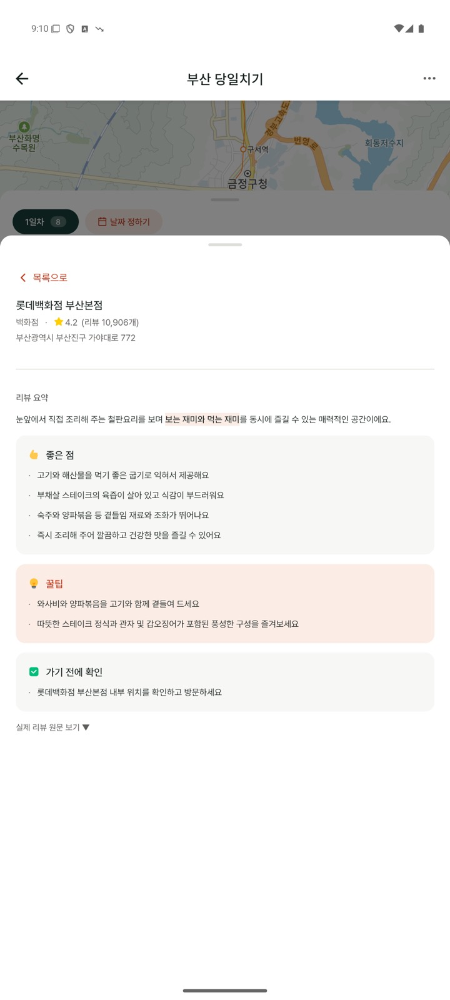
신고(1차): 백화점 리뷰 요약에 안에 있는 식당 이야기가 나옴
② 체인점이 다른 지점으로 잡힘 해결
신고
홍대 영상의 토스트 가게가 명동 지점으로 표시됨.
원인
카카오 이름 검색에 위치 조건이 없어 전국 1등 결과가 선택됐습니다.
조치
영상 속 장소들의 중심에서 3km 넘게 떨어진 곳은 중심 근처의 같은 상호를 찾아 "다른 지점일 수 있어요"로 표시합니다.
판단
처음엔 자동으로 지점을 바꿨지만, 지점 자체가 목적지인 영상에서 틀리게 바뀔 수 있어 표시만 하고 사용자가 고르게 정했습니다.
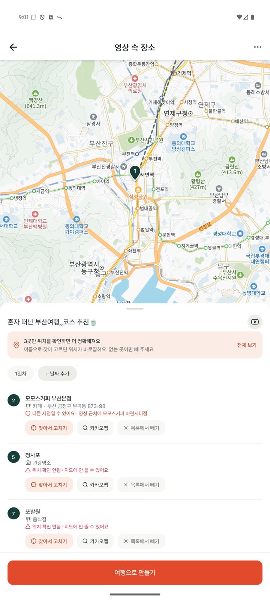
조치 뒤(1차): 떨어진 지점에 "다른 지점일 수 있어요" 표시
③ 직접 고친 위치가 다시 분석하면 원래대로 돌아감 해결
신고
위치를 바로잡은 뒤 영상을 다시 분석하면 틀린 위치로 되돌아감(1차), 고친 뒤에도 일부 장소는 여전히 되돌아감(2차).
원인
다시 분석은 장소를 새로 만듭니다. 1차 수정은 이름이 같을 때만 고친 위치를 이어받게 했는데, 운영 DB를 보니 같은 영상을 6번 분석한 결과 같은 자리가 세 가지 이름으로 뽑히고 있었습니다.
조치
이름이 같은 것부터 잇고, 남은 장소는 한쪽 이름이 다른 쪽을 포함하고 고친 위치에서 1km 안이면 잇습니다. 외부 API는 부르지 않습니다.
재확인
3차 확인에서 통과.
④ 긴 리뷰를 펼치면 장소 이름과 닫기(✕)가 사라짐 해결 · 세 번 만에
신고
리뷰 원문을 펼치면 시트 맨 위의 이름과 ✕가 화면 밖으로 밀림(1·2·3차 연속 실패).
원인
시트의 최대 높이를 기기 화면의 90%로 잡았는데, 제목 줄이 있는 화면에서는 시트가 놓이는 공간이 그보다 작아 시트 윗부분이 화면 위로 넘어갔습니다.
조치
최대 높이 설정을 없애 놓인 공간을 기준으로 하게 했습니다. 이름·닫기 줄은 스크롤 영역 밖으로 뺐습니다.
재확인
4차 확인에서 통과.
되짚기
앞선 두 번은 "헤더가 고정되지 않는다"는 증상만 보고 고쳤습니다. 화면을 직접 보지 않고 고친 탓에 진짜 원인(시트가 넘침)을 세 번째에야 찾았습니다.
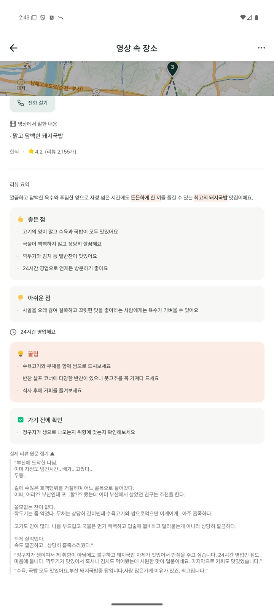
신고(3차): 원문을 펼치면 이름과 ✕가 화면 위로 사라짐
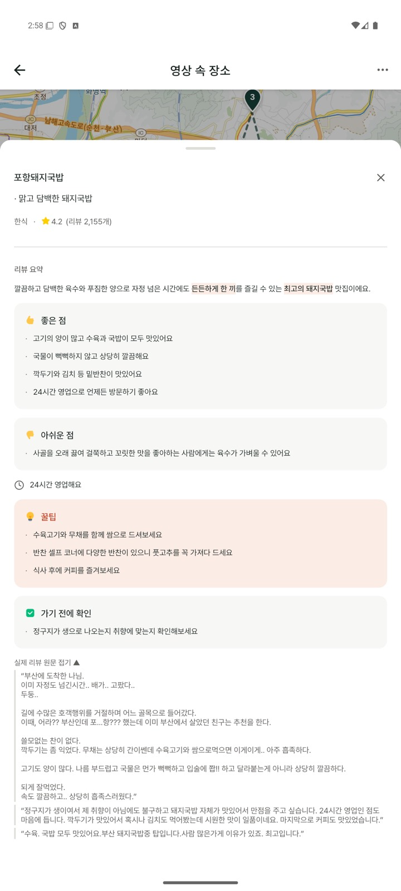
재확인(4차): 이름과 ✕가 맨 위에 남음
⑤ "다시 짜기"를 누르면 일정 초안이 사라짐 해결
신고
다시 짜기가 실패하면 예전 초안까지 없어짐(3차). 성공해도 홈에서 새 초안이 사라짐(4차).
원인
실패는 Gemini 503이었고(운영 로그 확인), 앱이 버튼을 누르자마자 예전 초안을 내렸습니다. 성공한 경우는 홈이 자동 초안만 보여 주는데 다시 짠 초안이 직접 만든 초안으로 저장됐기 때문입니다.
조치
새 초안이 예전 초안을 대신한다는 표시(replaces_draft_id)를 두었습니다. 새 초안이 준비되면 서버가 예전 것을 내리고, 실패하면 예전 초안이 그대로 남습니다.
재확인
5차 확인에서 홈·내 여행·영상 기록 세 곳 모두 새 초안 하나만 남는 것을 확인. 운영 DB에서도 새 초안 준비 1초 뒤 예전 초안이 내려간 것을 확인.
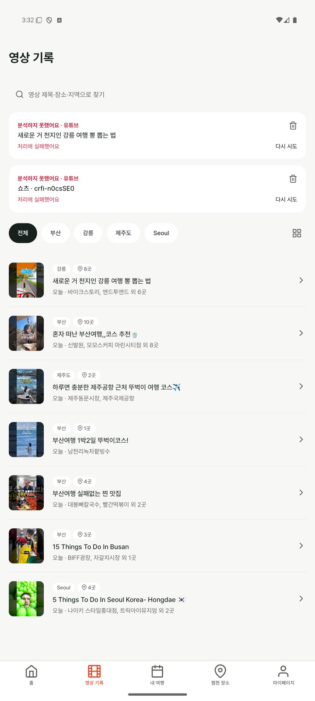
신고(3차): 다시 짜기 실패 뒤 영상 기록에 실패만 남음
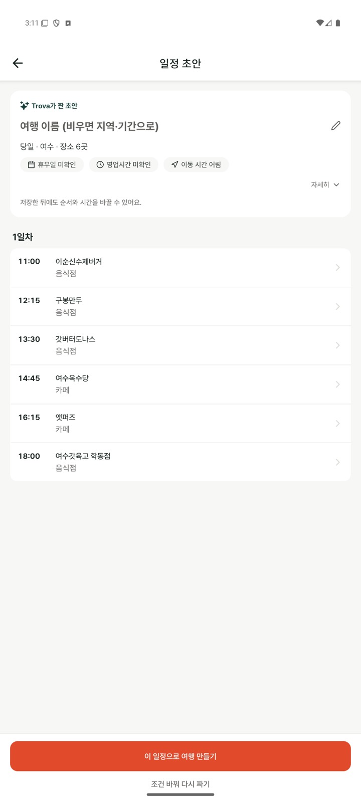
재확인(4차): 다시 짠 초안이 열림
⑥ 다시 분석한 영상의 초안이 예전 결과를 가리킴 해결
신고
다시 분석해도 초안은 예전 장소 그대로(1차). 다시 분석 뒤 홈 카드에서 장소 수와 썸네일이 빠짐(4차).
원인
다시 분석은 새 작업 번호를 만드는데 초안과 카드는 예전 번호를 가리켰습니다.
조치
초안을 열면 "이 영상을 다시 분석했어요. 새 결과로 다시 짤까요?"를 안내하고, 카드는 같은 영상의 최신 분석을 가리킵니다. 쿼리 수는 그대로 유지했습니다.
판단
초안을 자동으로 다시 만들면 하루 Gemini 한도를 쓰고 기존 결정(바로잡기는 외부 API를 부르지 않는다)과 부딪혀 안내만 하고 누를 때만 다시 짭니다.
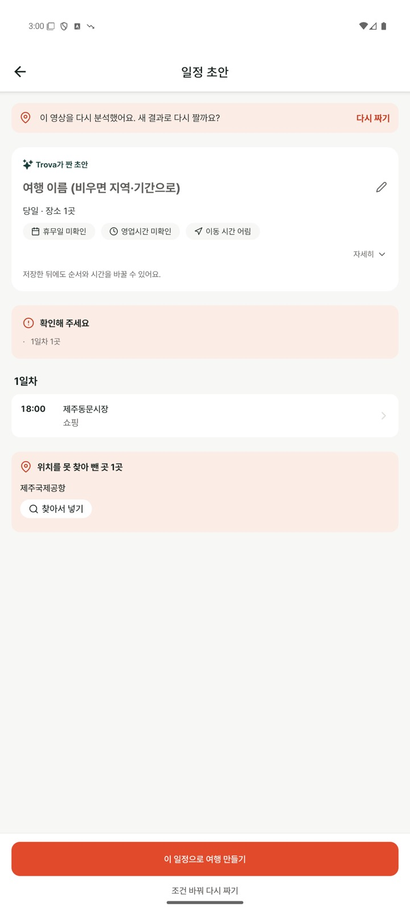
조치 뒤(3차): "이 영상을 다시 분석했어요. 새 결과로 다시 짤까요?" 안내
⑦ 쇼츠 하나만 "제목 없음" 해결 · 두 번 만에
신고
특정 유튜브 쇼츠만 제목이 안 나옴. 다시 분석해도 같음.
원인
이 영상은 유튜브 oEmbed가 401을 돌려줬습니다(운영 로그 확인). 대체 경로를 넣었지만 페이지 앞 600KB만 읽었고, 운영 서버가 받은 페이지에서 제목은 786KB 지점에 있었습니다.
조치
200KB씩 읽다가 제목이 나오면 멈추고 최대 3MB까지 읽습니다. 키도 비용도 들지 않습니다.
재확인
2차 확인에서 통과.
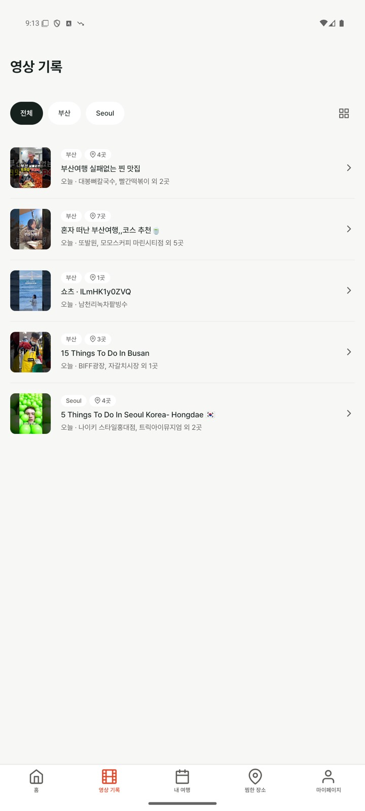
신고(1차): 세 번째 영상이 "쇼츠 · 영상 ID"로만 나옴
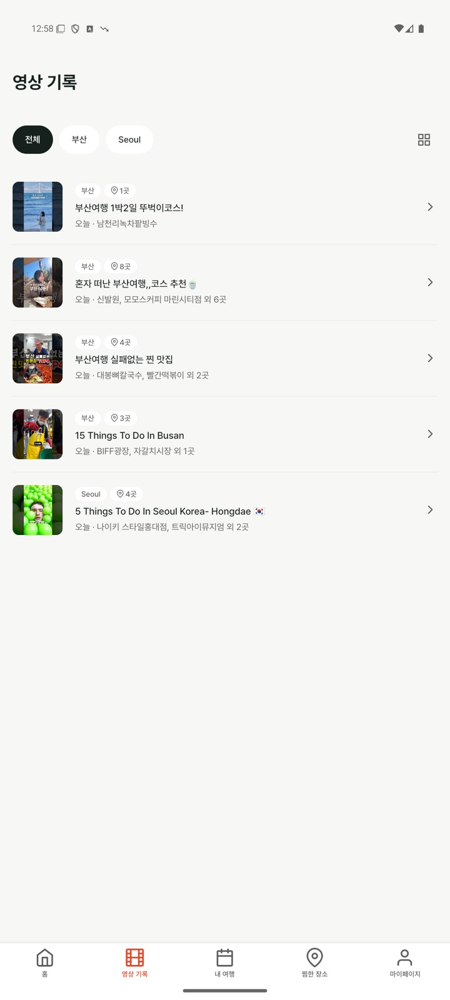
재확인(2차): 제목이 나옴
⑧ 대안·빈 시간 추천에 호텔·역·백화점이 섞임 해결
신고
점심 시간 빈칸 추천에 숙소·역·대학교가 20곳 넘게 나옴. 식당을 바꾸려는데 백화점이 추천됨.
조치
식사 시간대와 식당 자리는 식당으로 검색하고, 숙소·역·학교는 뺍니다. 마지막 장소 뒤부터 21시까지도 빈 시간으로 봅니다.
재확인
1·2차 확인에서 통과. 부산 추천에 주소가 "대구"인 식당이 나온 건은 좌표는 부산이고 구글 데이터의 주소만 틀린 것이라 고치지 않았습니다.
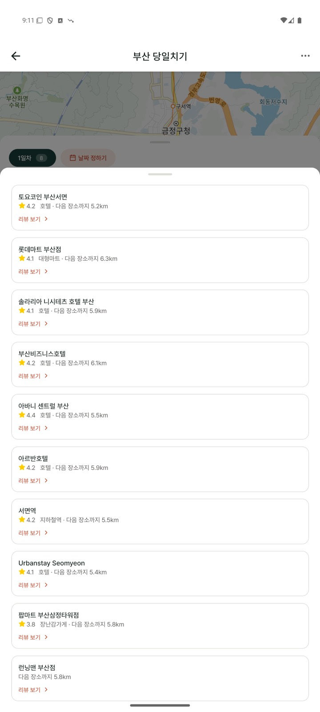
신고(1차): 추천 목록이 호텔·역으로 채워짐
⑨ 대안·비서 화면의 리뷰에서 이름이 안 보임 해결
신고
대안 찾기와 비서 대화에서 리뷰를 열면 어느 장소인지 알 수 없음. 로딩 중에는 이름이 아예 없음(3·4차).
원인
④를 고칠 때 이 두 화면이 별도 화면이라 빠졌습니다.
조치
"목록으로/대화로" 버튼과 이름을 스크롤 밖 맨 위에 두고, 누른 카드의 이름을 바로 넘깁니다.
재확인
5차 확인에서 Claude Code와 Codex 모두 장소 3곳으로 통과.
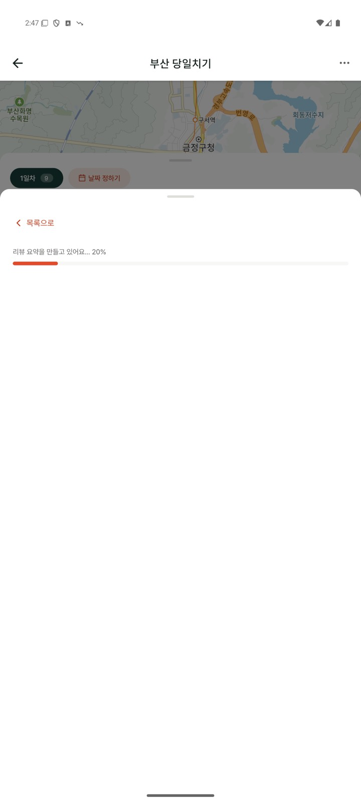
신고(3차): 리뷰를 만드는 동안 장소 이름이 없음
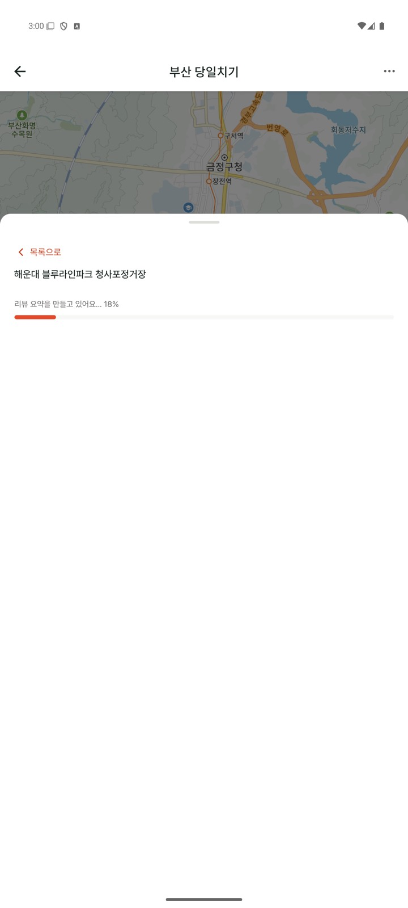
재확인(4차): 불러오는 중에도 이름이 보임
⑩ 초안 카드와 배지의 숫자가 안 맞아 보임 해결
신고
홈 카드는 "장소 7곳"인데 열면 6곳. "위치 미확인 2곳" 배지와 "위치를 못 찾아 뺀 곳 1곳"이 다름(5차).
원인
카드는 초안이 아니라 영상의 장소 수를 셌습니다. 배지 숫자는 둘 다 맞지만(2곳 중 1곳만 뺌) 그렇게 읽히지 않았습니다.
조치
서버가 초안에 들어간 장소 수를 내려 주고, 배지는 "위치 미확인 2곳 · 1곳 뺌"으로 적습니다.
재확인
6차 확인에서 Claude Code와 Codex 모두 홈·내 여행 카드 "장소 6곳", 배지 "위치 미확인 2곳 · 1곳 뺌"을 확인.
신고(5차): 홈 카드 "장소 7곳"
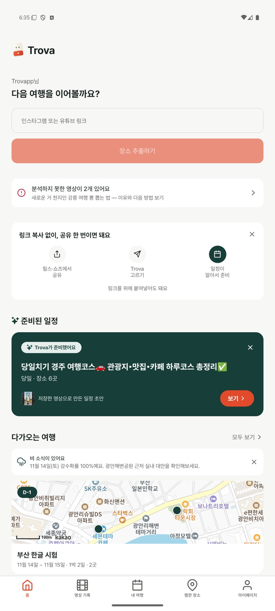
재확인(6차): 홈 카드 "장소 6곳"
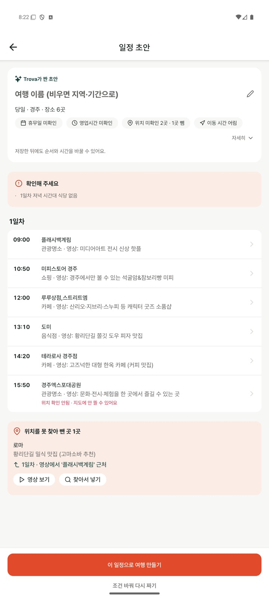
재확인(7차): 배지 "위치 미확인 2곳 · 1곳 뺌"과 행 표시(⑫)
⑪ 다시 분석하면 위치가 사라지는 장소 원인 확인 · 대응 방법 미정
신고
첫 분석에서 위치가 있던 "경주엑스포대공원"이 다시 분석 뒤 "위치 미확인"이 됨(5차).
원인
카카오에 그 이름의 장소가 없습니다(직접 검색 0건, "경주엑스포"로는 19건). 첫 분석의 위치도 진짜가 아니라 지역 중심 좌표였고, 다시 분석에서는 앞 순서의 다른 장소가 그 좌표를 먼저 가져가 겹침으로 버려졌습니다.
확인
운영 서버 로그에 그대로 남아 있습니다: "region 폴백 결과가 같은 영상의 다른 장소와 좌표가 겹쳐 폐기합니다(경주엑스포대공원)", "장소 검증 실패로 좌표 폐기: 로마". 처음엔 로그에서 못 찾았는데, 서버 로그가 UTC인데 한국 시각으로 찾은 탓이었습니다.
상태
고치는 방법은 비용 0원 원칙 안에서 비교한 뒤 정합니다.
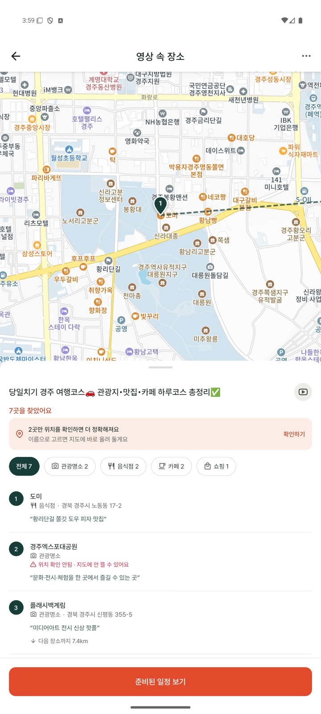
신고(5차): 다시 분석 뒤 "경주엑스포대공원"이 위치 확인 안됨
⑫ 초안에 남긴 "위치 미확인" 장소가 어느 줄인지 알 수 없음 해결
신고
배지는 "위치 미확인 2곳 · 1곳 뺌"인데, 일정에 남은 "경주엑스포대공원" 행에는 아무 표시가 없음(6차).
원인
초안 화면의 장소 행이 좌표가 있는지를 보지 않았습니다. ⑩에서 배지 문구를 고치면서 행 표시가 없다는 것을 확인하지 않았습니다.
조치
좌표 없이 남긴 장소 행에 "위치 확인 안됨 · 지도에 안 뜰 수 있어요"를 표시합니다(앱 #143).
재확인
7차 확인에서 통과. 나머지 5곳 행에는 표시가 없는 것도 확인(⑩의 세 번째 캡처).
⑬ 영상 기록 버튼이 "일정 짜기"·"여행으로 만들기"로 바뀜 해결 · 두 번 만에
신고
초안이 있는 영상인데 하단 버튼이 "준비된 일정 보기"가 아님. Claude Code가 잘못 눌러 영상 일정이 실제로 만들어짐(6차). 고친 뒤에도 앱을 새로 켠 첫 진입에서 약 3초 동안 "여행으로 만들기"가 보임(7차).
원인
이 버튼은 초안 목록과 "이 영상으로 만든 여행" 조회가 둘 다 성공해야 "준비된 일정 보기"가 됩니다. 조회가 실패했거나 아직 끝나지 않았으면 아래 단계의 만드는 버튼이 나왔습니다. 6차는 서버 재시작·중단 시간이었습니다(5장).
조치
조회가 실패하면 "일정 상태 다시 불러오기"(앱 #143), 응답이 오기 전에는 누를 수 없는 "불러오는 중..."(앱 #145)을 보여 줍니다. 이미 있는 초안을 여는 동안의 문구도 "일정을 짜고 있어요"에서 "초안을 불러오고 있어요"로 바꿨습니다.
되짚기
첫 수정은 실패한 경우만 막고 조회 중인 경우를 빠뜨렸습니다. Codex가 진입 0.4초 뒤 화면을 찍어 주어 찾았습니다.
재확인
8차 확인에서 통과. 경주 영상 첫 진입 6번·재진입 6번, 초안 없는 영상 첫 진입 3번에서 만드는 버튼이 먼저 보인 적이 없습니다. 초안 열기는 18번 모두 2.4초 안(6차 약 30초, 7차 1.5 ~ 3.7초)이고 "일정을 짜고 있어요"는 0번입니다.
바뀐 것
잘못 눌린 탭으로 경주 영상의 장소 7곳에 방문 순서가 저장됐습니다. 새 초안이나 Gemini 호출은 없었습니다(운영 DB 조회로 확인).
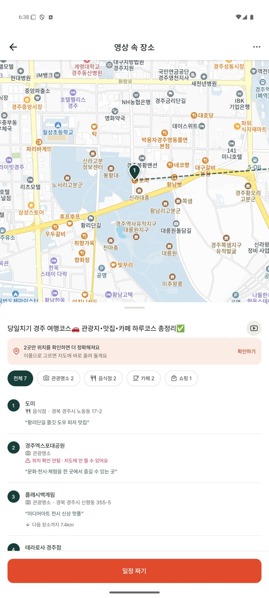
신고(6차): 초안이 있는데 "일정 짜기"
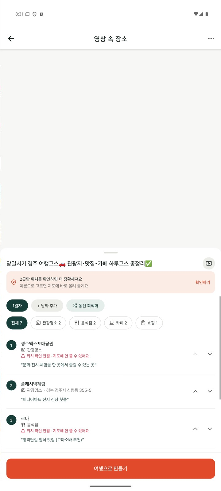
신고(7차): 진입 0.4초 뒤 "여행으로 만들기"
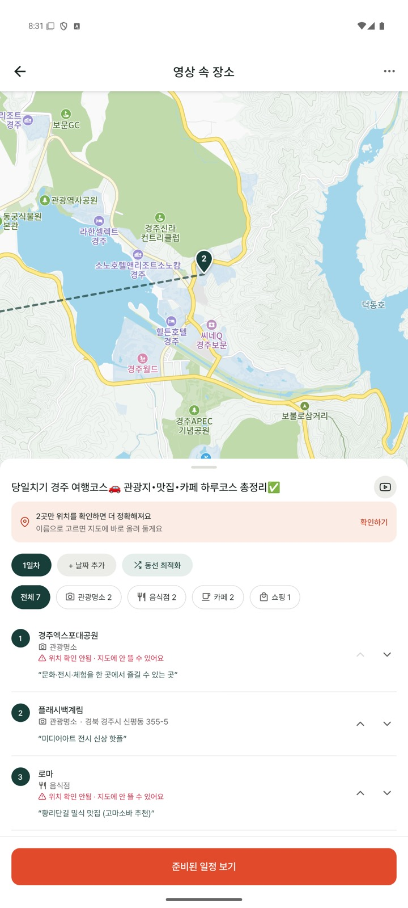
7차: 약 3초 뒤 "준비된 일정 보기"
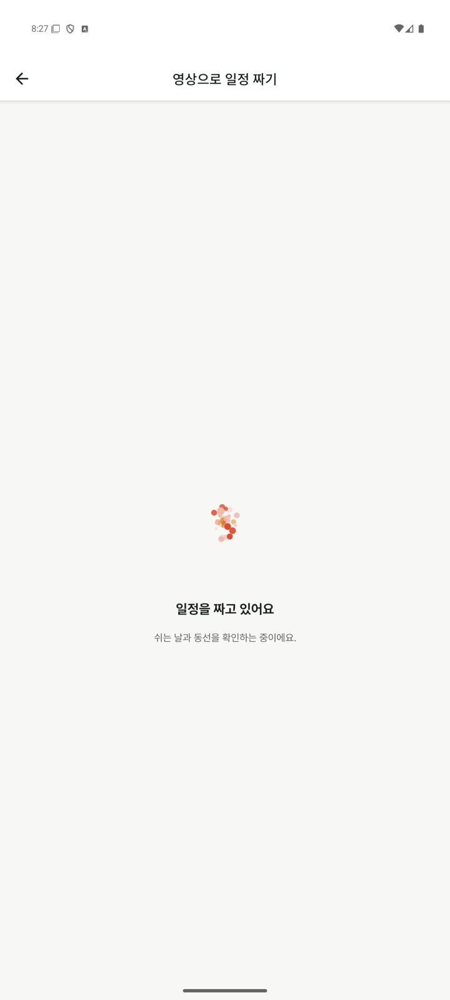
7차: 있는 초안을 여는데 "일정을 짜고 있어요"
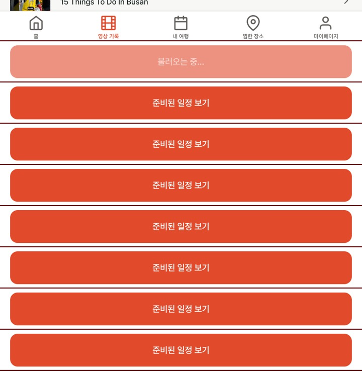
재확인(8차): 첫 진입 뒤 약 0.5초 간격으로 찍은 하단 버튼. "불러오는 중..." 다음 "준비된 일정 보기"
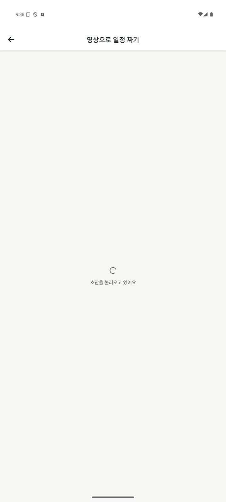
재확인(8차): 있는 초안을 여는 동안 "초안을 불러오고 있어요"
4. 별도 사례: 9시간 서비스 중단 (11-13 00:56 ~ 09:54)
피드백에 대응하던 같은 날 밤, 다른 작업(시작 시간을 줄이려는 JVM 설정 시험)에서 운영 서버가 멈췄습니다. 위 수정들과는 원인이 다르지만 같은 운영 환경에서 난 일이라 함께 적습니다.
시각(KST)
일어난 일
근거
00:38 ~ 00:51
배포 명령을 main이 아닌 작업 폴더에서 실행해 main보다 29커밋 뒤진 브랜치(a2d05f4)가 약 10분 운영에 올라갔습니다. 00:51에 main(16765b8)으로 다시 배포했습니다.
배포 로그 2건
00:56
클래스 미리 읽기(AppCDS) 파일을 운영 서버에서 직접 만들려고 앱을 멈추고 학습용 java를 실행했습니다.
커널이 그 java를 강제 종료해 서버는 살아났지만, 앱은 직접 멈춘 상태라 자동으로 다시 뜨지 않았습니다.
커널 로그 "Out of memory: Killed process (java) anon-rss:734856kB" 08:28:08
09:52 ~ 09:54
앱을 수동으로 시작했고 약 2분 뒤 정상 응답했습니다.
서버 로그 "Started" 09:52:06, 앱 시작 완료 09:54:13
영향
약 9시간 동안 앱의 모든 서버 기능이 동작하지 않았습니다. 이 사이 재현 확인과 배포는 없었습니다.
원인
메모리 여유가 없는 운영 서버에서 메모리 상한 없이 시험을 돌렸습니다. 시험 스크립트가 SSH 시간 초과로 끝나면서 "앱 다시 시작" 단계도 실행되지 못했습니다.
정리
시험용 파일과 설정을 지우고 서비스 설정을 원래대로 돌렸습니다. 재시작 후 메모리 사용은 425MB였습니다.
재발 방지
운영 서버에서 이런 학습 실행을 하지 않습니다(필요하면 다른 기기에서 만들어 옮김). 운영에서 앱을 멈추는 측정에는 메모리 상한과 서버 쪽 자동 복구 타이머를 함께 둡니다. 배포는 main에 맞춘 깨끗한 작업 폴더에서만 실행하고, 출력의 배포 대상 커밋이 main과 같은지 확인합니다.
아쉬운 점
멈춘 뒤 복구까지 9시간이 걸렸습니다. 그 사이 외부 상태 확인 경보가 울렸는지, 왜 대응으로 이어지지 않았는지는 아직 확인하지 못했습니다.
5. 별도 사례: 재현 확인 중에 난 23분 중단 (11-13 15:41 ~ 16:04)
6차 확인이 진행되던 시간에 다른 작업의 배포와 운영 부하 측정이 겹쳤습니다. 6차에서 본 실패 대부분이 이 시간의 서버 상태에서 나왔습니다.
시각(KST)
운영 서버에서 일어난 일 (서버 로그)
15:35:47 ~ 15:37:36
공유 한도 변경(#432) 배포로 재시작
15:39:16
Claude Code의 잘못 눌린 탭으로 "일정 생성 완료: 7개 장소"
15:42 ~ 15:56
부하 측정으로 DB 연결 10개가 모두 사용 중. 요청이 30초를 기다리다 실패했고, 15:50 ~ 15:55에는 경고·오류가 분당 230 ~ 380건
15:41 ~ 16:04
밖에서 서버 응답 없음(부하 측정 작업의 기록 기준)
보인 증상
초안을 열면 약 30초 "일정을 짜고 있어요" 뒤 "일정 상태를 불러오지 못했어요", 여러 화면 위에 "최신 정보를 불러오지 못했어요", 영상 기록 버튼이 만드는 버튼으로 바뀜(⑬).
찾은 방법
보고서의 시각 "6:39"가 에뮬레이터 시계(UTC)여서 한국 시각 15:39로 바꿔 서버 로그와 맞췄습니다.
판단
불러오기 실패 자체는 서버 상태 때문이라 고치지 않았고, 7차 확인에서 12번 열어 0번 실패(1.5 ~ 3.7초)로 확인했습니다. 서버가 응답하지 않을 때 앱이 만드는 버튼을 내놓는 것은 앱 문제라 고쳤습니다(⑬).
아쉬운 점
재현 확인과 배포·부하 측정을 같은 시간에 돌렸습니다. 이후 확인 목록에는 시작·끝 시각을 한국 시각으로 적게 하고, 확인 중에는 배포와 측정을 멈춥니다.
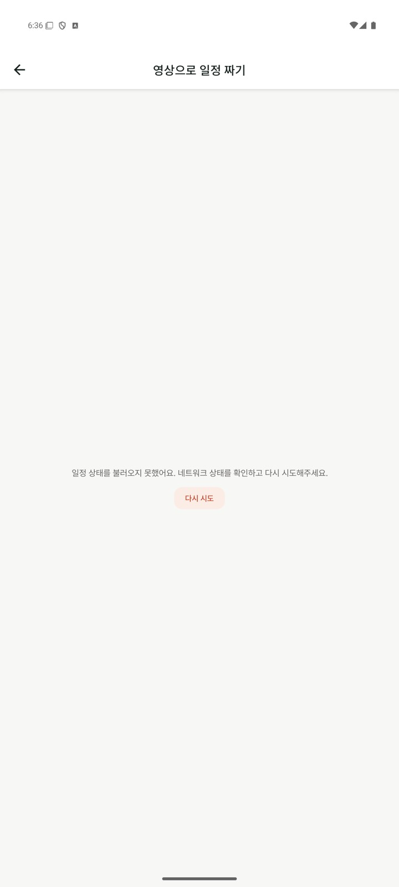
6차: 30초 뒤 "일정 상태를 불러오지 못했어요"
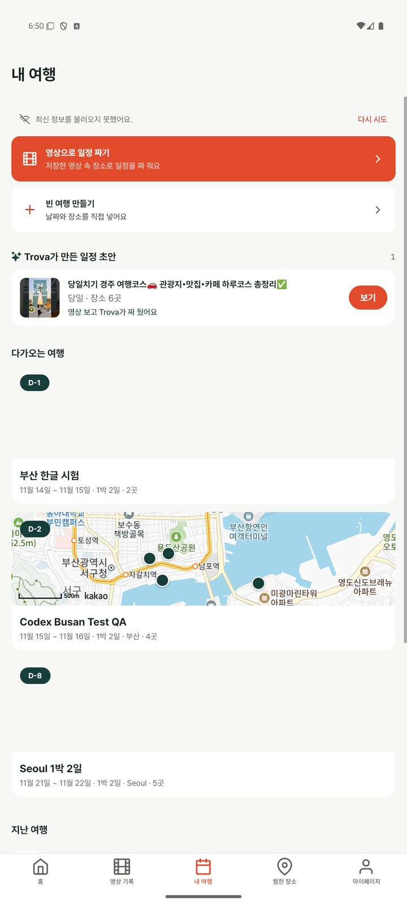
6차: 내 여행 위쪽 "최신 정보를 불러오지 못했어요"
6. 대응하며 틀린 것과 배운 것
틀린 것
이후 바꾼 방식
④ 같은 문제를 세 번 고침
증상이 아니라 "왜 그 화면에서만"을 먼저 묻습니다. 화면을 직접 볼 수 없으면 라이브러리 계산식까지 읽고 고칩니다.
⑦ 로컬에서만 통과한 수정
외부 페이지를 읽는 코드는 운영 서버가 받는 응답 크기로 확인합니다.
⑨ 같은 부품을 쓰는 화면을 빠뜨림
한 화면을 고치면 같은 컴포넌트를 쓰는 화면을 모두 찾아 같이 고칩니다.
⑤ 실패 경로를 안 봄
바꾸는 동작은 "새것이 준비된 뒤에 예전 것을 내린다"를 기본으로 합니다.
⑪ 로그를 한국 시각으로 찾아 "없다"고 봄
서버 로그는 UTC입니다. "없음"으로 결론 내기 전에 시간대와 검색 조건을 다시 확인합니다.
⑫ 문구만 고치고 그 문구가 가리키는 화면을 안 봄
"일정에 남아 있다"처럼 다른 곳을 가리키는 문구를 넣을 때는 가리킨 곳에 실제로 표시가 있는지 확인합니다.
⑬ 실패만 막고 조회 중을 빠뜨림
서버 응답에 따라 바뀌는 버튼은 성공·실패·아직 모름 세 상태를 모두 정합니다. 모르는 상태에서는 만드는 버튼을 내지 않습니다.
6차 실패를 앱 문제로 볼 뻔함
실패가 한꺼번에 나오면 그 시각의 서버 상태부터 봅니다. 기기 시계의 시간대도 확인합니다.
자동으로 고치려다 되돌림(②·⑥)
사용자 의도를 덮어쓸 수 있거나 하루 한도를 쓰는 동작은 표시·안내만 하고 사용자가 누르게 합니다.
7. 운영 배포 기록
시각(KST)
커밋
내용
JAR 해시
결과
11-12 17:47
372600f
최초 신고 수정
c1c8115e37ff500b
134초에 UP
11-12 21:45
10f2a3f
1차 확인 실패 항목
4737db9017496e72
140초에 UP, ERROR 0건
11-12 23:29
b6adfe9
고친 위치 이어받기
af2d35507e092ce9
144초에 UP, ERROR 0건
11-13 00:41
a2d05f4
잘못 올라간 브랜치(4장)
591dcaeda55897ec
10분 뒤 main으로 다시 배포
11-13 00:51
16765b8
하루 공유 한도 10회
20587598236c574b
132초에 UP
11-13 12:45
3f0ec2f
다시 짠 초안 이어받기
2ac071ed224b7fcd
134초에 UP, ERROR 0건, 새 컬럼 확인
11-13 14:38
5d559f5
초안 카드 장소 수
02cc46f69c78f9df
144초에 UP
11-13 15:37
1223a54
공유 한도 최근 7일 10개(다른 작업)
eaef72bddf20be57
133초에 UP, 3분 뒤 부하 측정으로 중단(5장)
앱 OTA는 6·7차 수정으로 두 번 더 나갔습니다: 01a1d3f8(#143), 01a1d431(#145). 서버 배포는 없었습니다.
시각은 배포가 끝난 때입니다. 모든 배포는 진행 중 작업 0건 확인 → 전송한 JAR 해시 일치 → 직전 JAR 백업 뒤에 교체했고, 배포 후 확인 3건(인증 없는 요청 401 두 가지, 세션 쿠키 0개)을 통과했습니다. 피드백 수정 때문에 되돌린 배포는 없습니다. 운영 DB는 조회만 했고 데이터를 고치지 않았습니다.
8. 모니터링과 근거 자료
3장과 5장의 화면 캡처는 Claude Code·Codex가 1 ~ 8차 확인에서 찍은 1,053장(1 ~ 7차 736장, 8차 317장) 중 24장입니다. 아래 Grafana·PR·EAS 캡처는 5차 확인 직후(11-13 15:00) 기준이라 6·7차의 PR 2건과 OTA 2건은 보이지 않습니다.
초안 141번: 영상 장소 7곳, 일정 6곳, 뺀 곳 1곳("로마", 좌표 없음), 좌표 없이 일정에 남은 곳 1곳("경주엑스포대공원").
⑪ 위치
서버 로그로도 확인. 첫 분석(5701)의 "경주엑스포대공원"은 좌표만 있고 주소가 비어 있었습니다(지역 중심 좌표). 다시 분석(5702)에서는 카카오 이름 검색이 9회로 1회 늘고 두 장소 모두 좌표가 없습니다.
공유 한도
11-13 하루 동안 테스트 계정의 분석 10건(완료 8, 실패 2)으로 한도 10회를 모두 썼습니다.
9. 남은 것
밤사이 서비스 중단을 바로 알아채는 방법(경보 전달 경로) 점검
⑪ 카카오에 없는 이름의 위치 찾기 방법 결정
초안을 불러오는 동안 화면 제목이 "영상으로 일정 짜기"로 보임(8차에서 발견, 1초 안팎)
잘못 눌린 탭으로 저장된 경주 영상의 방문 순서 되돌리기(운영 DB 쓰기라 승인 뒤 진행)
대안 추천 수가 1곳과 19곳으로 크게 다른 경우, 특정 영상의 첫 분석 2분 30초
저장하지 않은 직접 초안을 다시 여는 곳이 없음, 리뷰 요약 문구의 실제 모델 확인
수정 전에 숨겨진 초안 2건 복구(운영 DB 쓰기라 승인 뒤 진행)
근거: 운영 서버 로그(systemd·커널), trova-backend docs/experience-notes.md(2026-11-12 ~ 11-13 항목), 운영 배포 로그, GitHub PR(backend #415·#417·#419·#421·#425·#427, app #131·#133·#135·#137·#139·#141·#143·#145), 재현 확인 캡처 1,053장. 테스트 수치는 로컬 실행, UP 시간과 확인 항목은 운영 서버 기준입니다.